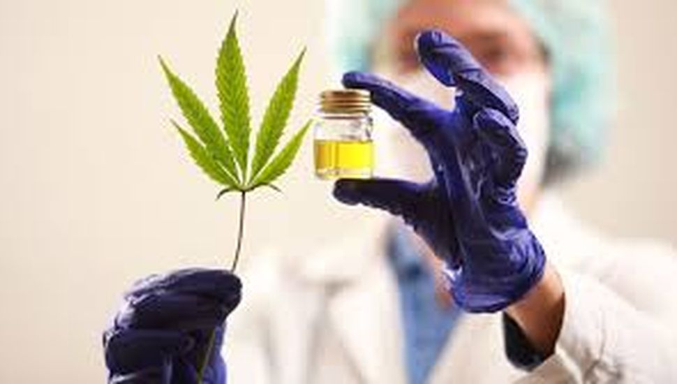
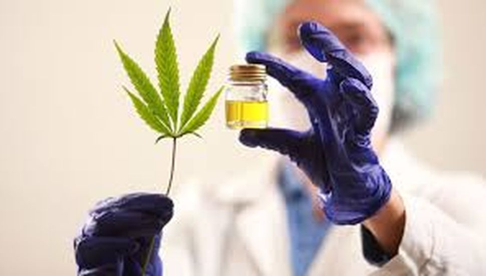
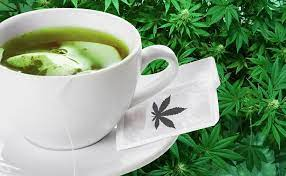
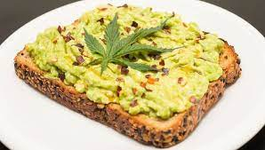

Marihuana y CBD
Ultimas Noticias

Tratamientos y recetas
Marihuana y CBD
Ultimas Noticias
Tratamientos y recetas
La planta de cannabis se utilizó por miles de años en distintas culturas alrededor del mundo para distintos fines, entre ellos, la medicina. La planta posee distintos principios activos, denominados Cannabinoides. Estos Cannabinoides, en un número de más de 60, tienen distintas funciones, algunas descubiertas, y en su mayoría sin tener en claro aún cual es propósito. Estos Cannabinoides, por estar dentro de la planta se denominan Fitocannabinoides. El cuerpo humano posee, en la superficie de muchos tipos de células de nuestro organismo, sitios específicos donde se acoplan estos principios activos de la planta, los fitocannabinoides. Los más comunes, y de cuales se tiene mayor información son el THC, el CBD, CBG, CBN entre más de 100 descubiertos hasta el día de hoy. Los receptores de estos cannabinoides son denominados CB1 y CB2, encontrándose distribuidos por todo el cuerpo.El cuerpo humano también produce moléculas similares a las de la planta de cannabis, llamados endocannabinoides (endo=adentro). Los cannabinoides tienen propiedades medicinales, y esto permite que algunas dolencias y patologías puedan ser tratadas con cannabis, tales como cáncer, epilepsia, glaucoma, esclerosis múltiple, fibromialgia, dolor crónico, entre otros que están en investigación.
Cannabis y sus formas de consumo
 